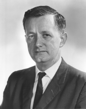

Please note: the AAS Obituaries are temporarily being hosted on this website while their full content is being ingested into the PubPub publishing platform newly adopted by the Bulletin of the American Astronomical Society. When the migration is complete, your existing links will take you to the final, migrated content. Contact peter.williams@aas.org with any questions.
John Aloysius O’Keefe (1916-2000)
John Aloysius O'Keefe, one of the pioneers of the Space Age and the man famed planetary scientist Eugene Shoemaker called "the godfather of astrogeology," died on September 8, 2000, from complications due to liver cancer. O'Keefe was 83.
Dr. O'Keefe obtained degrees at Harvard and the University of Chicago and started his professional life as an astronomer. His first major discovery was to explain the peculiar light curve of R Coronae Borealis. John suggested it formed clouds of solid carbon, which blocked the light at optical wavelengths; the dispersal of the clouds returned the star to normal brightness. This explanation received notice in the popular press: Time magazine published a short note in its September 26, 1938 issue.
When World War II broke out O'Keefe was rejected by the draft. Instead he joined the Army Map Service in the Corps of Engineers as a civilian and began a new career as a geodesist, producing improved maps for the war effort. He continued this work during the Cold War. His best-known protege at Army Map was William Kaula, who went on to become an outstanding authority on satellite geodesy.
In the 1950s O'Keefe asked himself what he could do for medicine after a daughter had a bout with cancer. From early work at Harvard on eclipsing binaries he knew that one star could be used as a probe to scan the other and obtain an "image." Applying the probe idea to microscopy led him to independently rediscover the principle of the near-field optical microscope first described by E. H. Synge in the 1920s. O'Keefe and his teenage neighbor Fred Murphy actually tried to build a microscope in Murphy's basement, but their equipment was too crude and they gave up the attempt.
O'Keefe published his idea in the Journal of the Optical Society of America in 1956, where it attracted little notice. Later the principle was once again independently rediscovered and developed into the scanning tunneling microscope, which won its inventors a Nobel Prize in 1986.
O'Keefe joined NASA in December of 1958 and became the assistant chief of the Theoretical Division under Robert Jastrow at the Goddard Space Flight Center in Greenbelt, Maryland. He spent the rest of his professional career at Goddard.
O'Keefe will always be best remembered for one of the very first scientific results of the "Space Age." He and his coauthors Ann Eckels and Ken Squires discovered that the Earth had a significant third degree spherical harmonic in its gravitational field. The "pear-shaped Earth," as it was dubbed, became front-page news and was even the subject of a "Peanuts" cartoon.
He also explained John Glenn's "fireflies," which the astronaut saw floating outside his capsule during his historic flight in 1962; he realized from their slow speed that they had to originate from the capsule itself. The fireflies turned out to be ice crystals lit by the sun.
Another of his accomplishments was, together with lead author Han-Shou Liu, to theoretically understand the spin-orbit coupling of Mercury. They published their results in Science magazine in 1965.
Some of O'Keefe's most influential work was behind the scenes. He played a key role in expanding the scope of the US Geological Survey to include other celestial bodies; for this and his other activities on behalf of the Apollo Program, Eugene Shoemaker christened him the "godfather" of astrogeology. O'Keefe played a seminal but largely unknown role in promoting space photography, which evolved into the highly successful LANDSAT and other satellites.
He is also the father of space geodesy, proposing in 1955, two years before Sputnik, to use searchlights to track the motion of reflector-bearing satellites for geodetic purposes. After the invention of the laser, the scheme became feasible and he strongly supported putting retro-reflectors on satellites and on the lunar surface. These efforts helped lead to the LAGEOS, STARLETTE, and other geodetic satellites, plus the retro-reflector arrays which the Apollo astronauts left on the Moon
He spent the latter part of his career working on tektites, publishing a book, Tektites and their Origin , in 1976. O'Keefe remained convinced to the end of his life that tektites come from the Moon, his main argument being that impacts on Earth could not account for the purity of the glass. This put him at odds with the rest of the tektite community.
NASA's Goddard Space Flight Center conferred its highest honor, the Award of Merit, on O'Keefe in 1992. Advancing Parkinson's disease finally forced him to retire in 1995. Eugene and Carolyn Shoemaker named an asteroid after him in 1997. His name also lives on in the Yarkovsky-O'Keefe-Radzievskii-Paddack (YORP) effect for his work with Stephen Paddack on the rotational speed-up of small celestial bodies by sunlight.
In personality O'Keefe was an "original." His colleagues and employees remember him as brilliant, with contagious enthusiasm and a self-deprecating sense of humor. His wit and his many personal adventures made him a great raconteur. Those who met him will certainly never forget him.
Photo courtesy of the National Aeronautics and Space Administration
Obituary written by: David P. Rubincam (Laboratory for Terrestrial Physics, NASA's Goddard Space Flight Center), Paul D. Lowman (Laboratory for Terrestrial Physics, NASA's Goddard Space Flight Center)
BAAS Citation: BAAS, 2000, 32, 1683
SAO/NASA ADS Bibcode: 2000BAAS...32.1683R